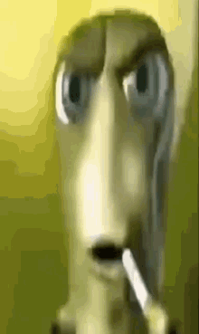
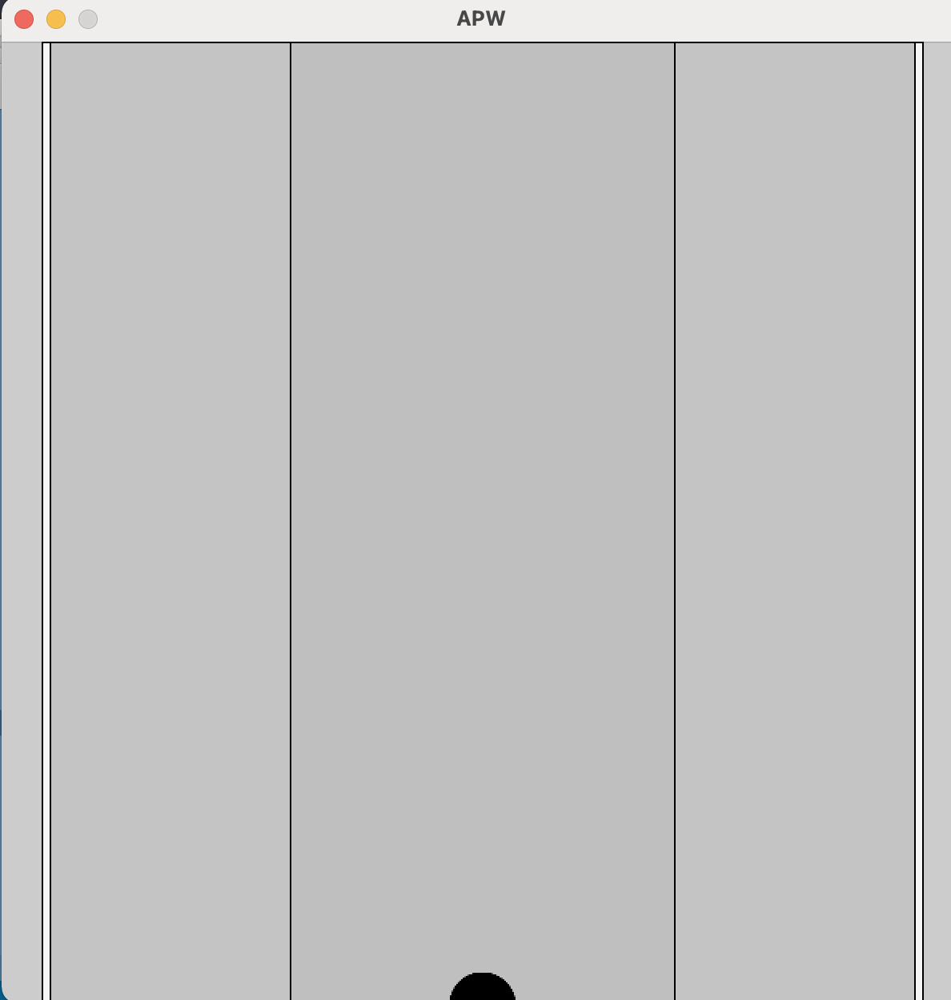
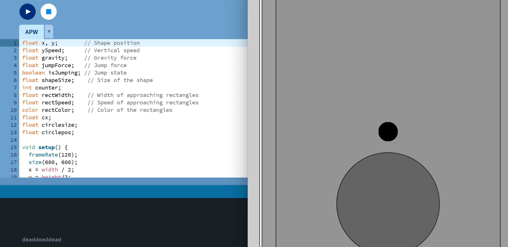
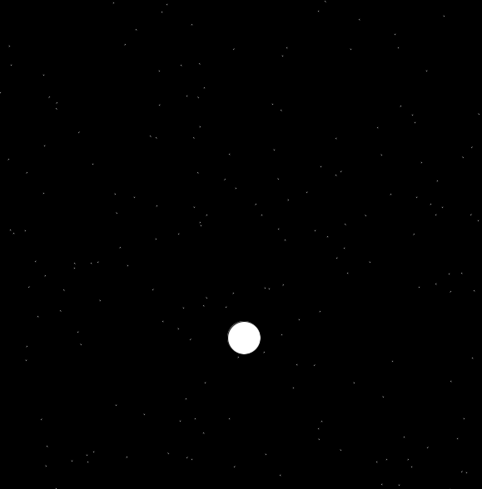
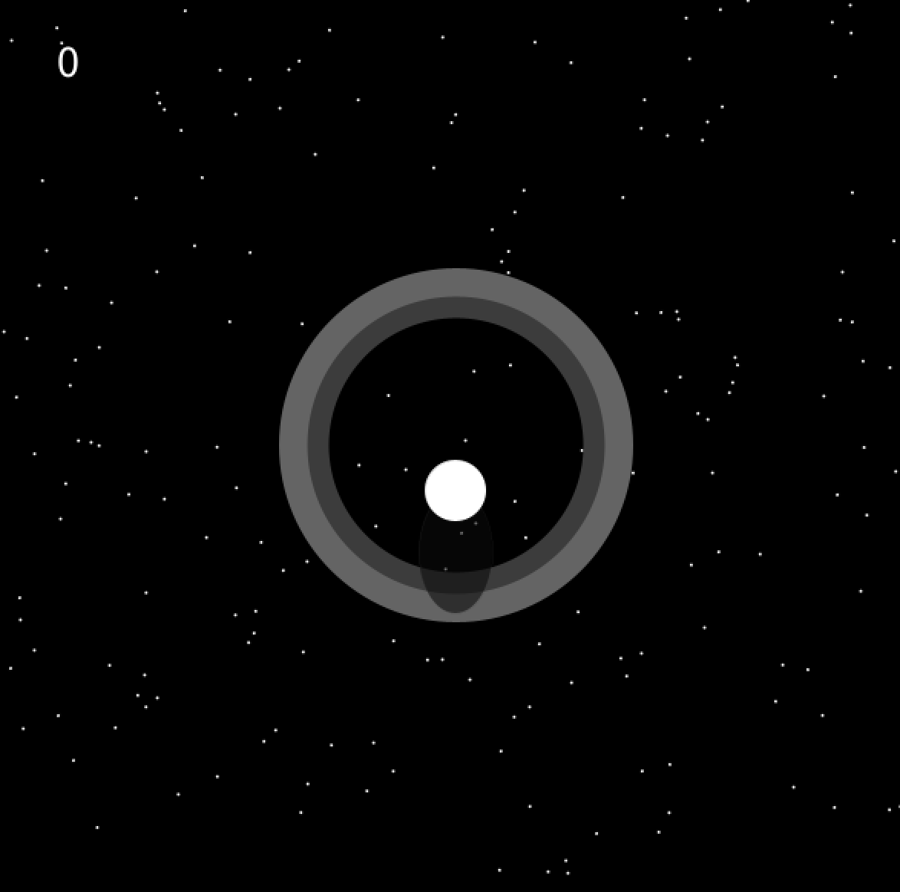
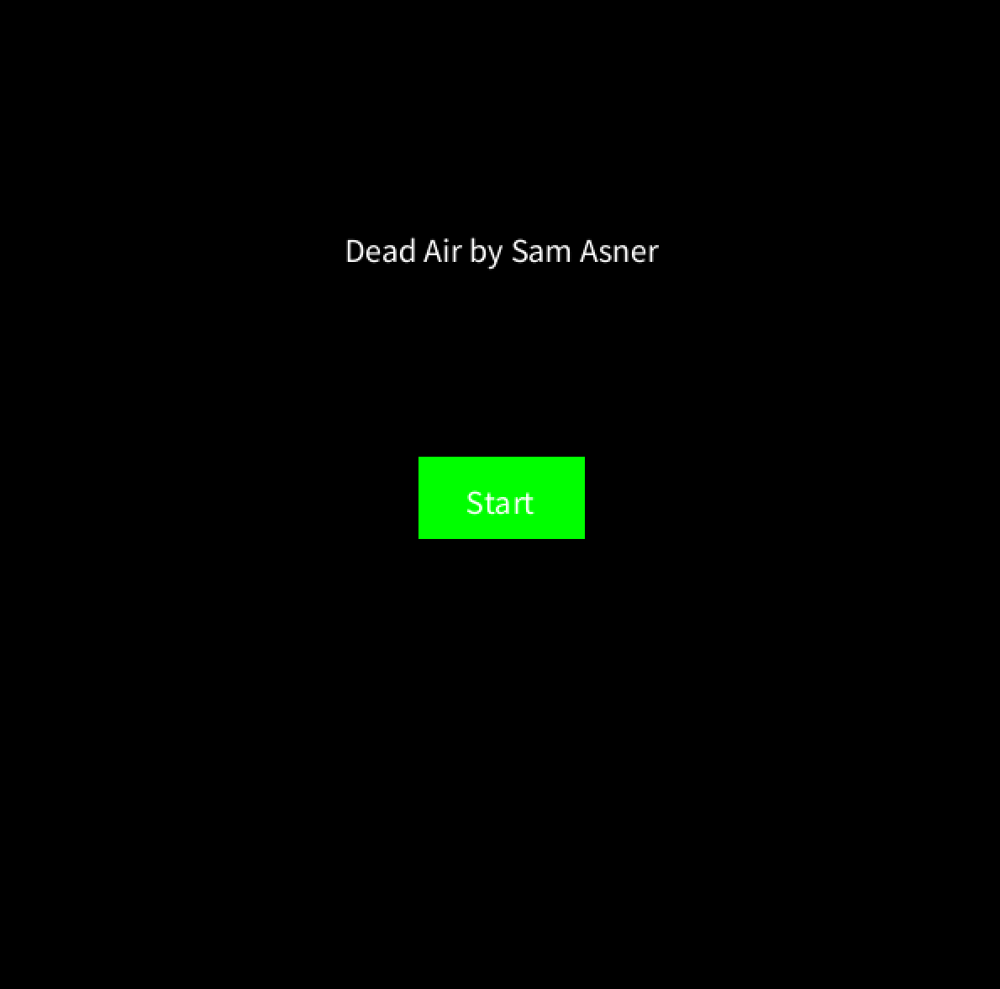
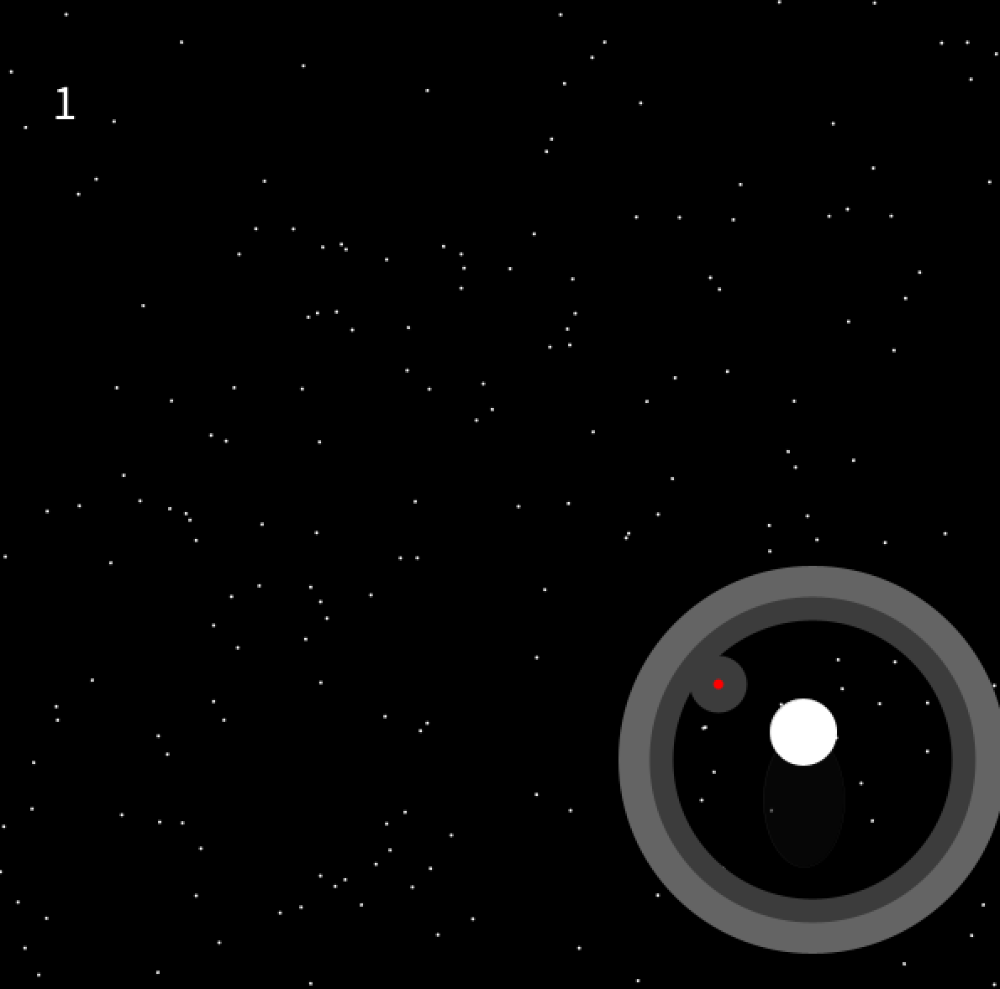
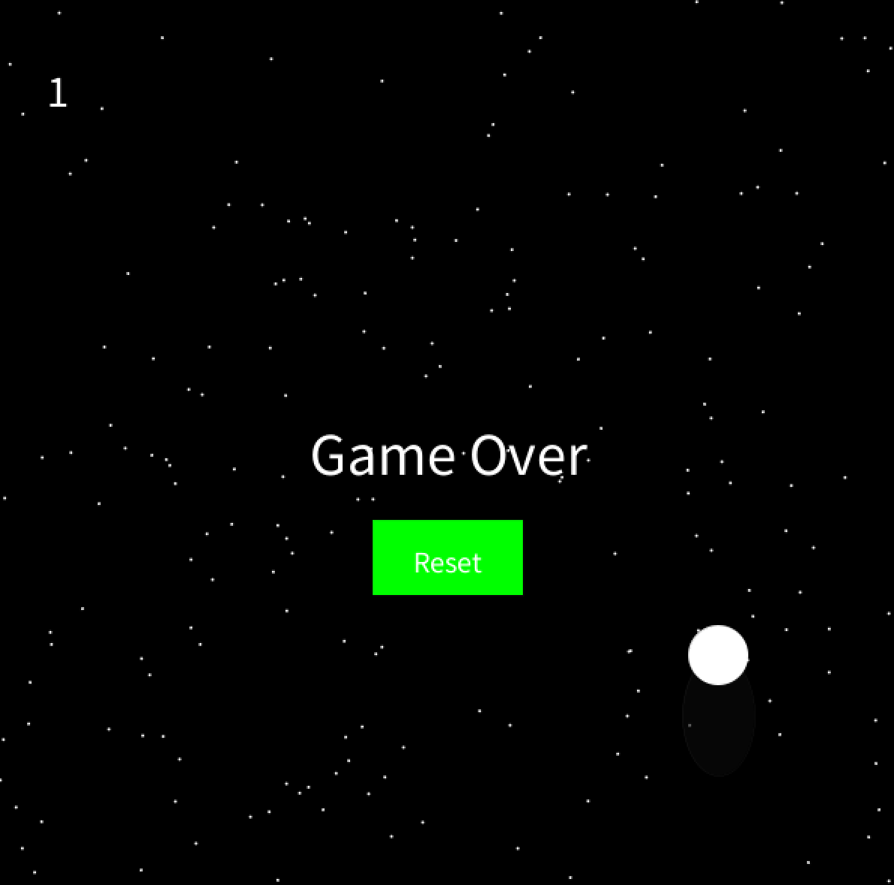

10/4/23: I've made some good progress on my project. I've familariazed myself with Processing again, and started messing around with different movement options for my game. So far, I've created a simple bit of code with a shape that can smoothly jump, and a counter that counts the amount of jumps. This is far from the final product, but right now I'm just trying to experiment in Processing so that I have a good foundation of knowledge on which to build my game.
10/19/23: I've started working on ways to mimick motion within processing. I created a kind of endless forward animation with a rectangle that grows bigger and then creates a new rectangle as soon as the previous one hits the sides. This gives a kind of endless hallway effect and I think it would be a really cool and asethically pleasing addition to my game.
11/02/23: I've begun to work on collision between the two objects in my game. I made it so as the larger ball gets to a certian size and the smaller ball is within the bigger ball, It creates a death message. The bones of my game are looking really good and I think besides some Additional mechanics and movement updates, all it needs is a decent polish.
11/16/23: I've added more polish into my game. I added stars in the background, although this caused some issues that I need to adress in the coming weeks. For example, the rectangles that add the sense of depth into my game now flash with the stars and it messes with the depth graphic. I need to figure out a way to incorporate both, maybe a ring kind of thing? For some reason, it also messed with the collision between the two circles. These are all issues that I need to look into .
12/8/23: I've worked a lot this week on bug fixing my game, as the state it was in last week was very unplayable. I added a fair amount of polish, and started playing with the idea of incoming rings that you must pass through in order to get points. I added a counter which counts each time the player passes through a ring, as well as a 3-d effect on each ring, and shadows.
2/8/24: The basic mechanics of game are really coming into shape. I've added a laser mechanic to the player, that can send a laser beam any direction using WASD. With this, I added an enemy mechanic to the game, which is a red ball (for now) that follows the player using trigonometric functions and ends the game if it reaches the player's position. The player can use the laser to attack the enemy and make it dissapear. Because of these new end conditions, I added a functional start button and name to the begginning of the game, as well as a game over screen and a reset button. I've been trying to switch over my code to be object-oriented, but every time I tried to it would break and I would be unable to fix it. So, unfortunately I wasn't able to do this in time for this entry but this is something that I definitely want to keep working at. Doing this would allow me to create more enemies as the rounds go on, and create an increasing difficulty mechanic.
  